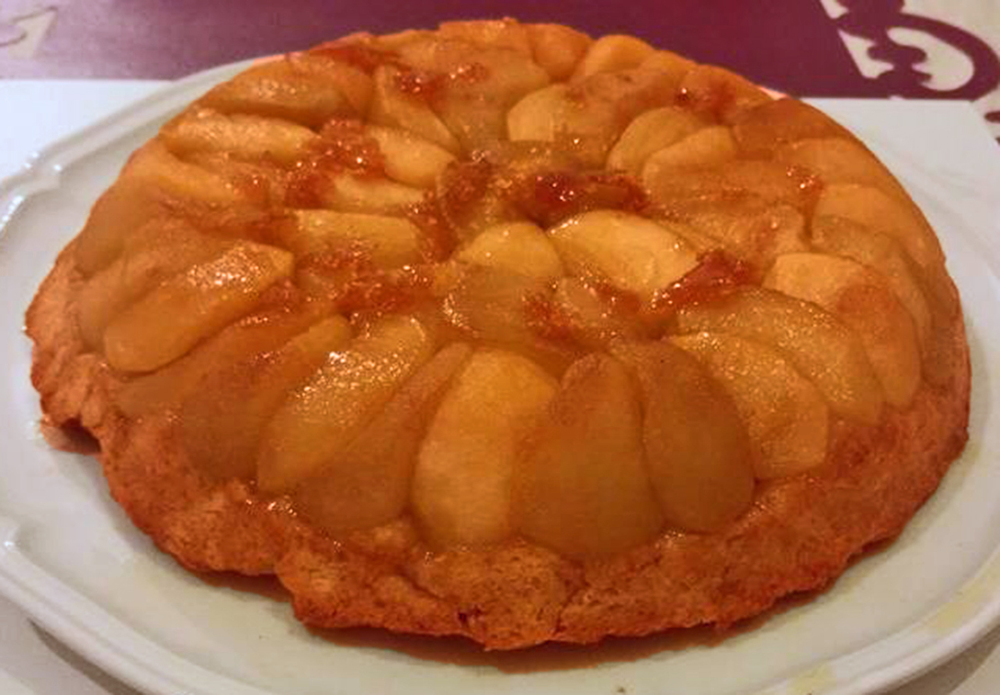
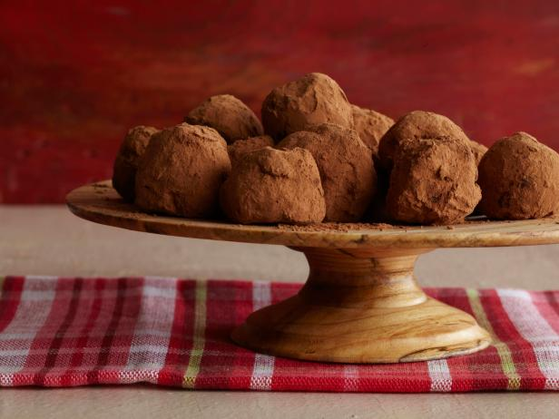
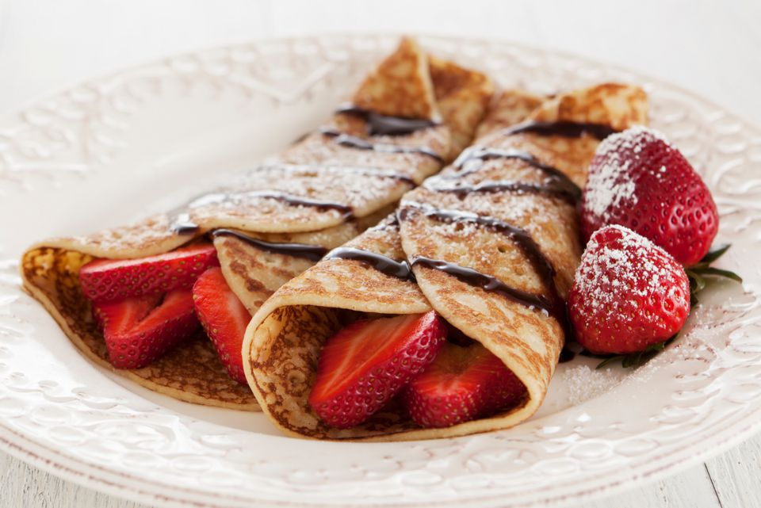
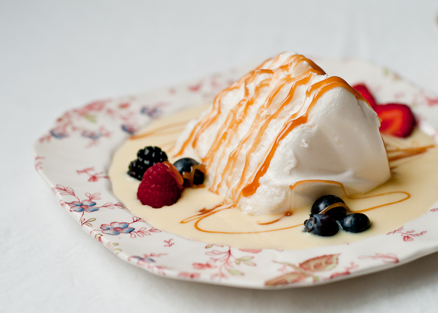

| Creme Brulee |
 |
- Description: Creme Brulee is a dessert consisting of a rich custard base topped with a contrasting layer of caramel.
- Difficulty Level: Medium
- Link to Recipe: Recipe for Creme Brulee
|
| Tarte Tatin |
 |
- Description: Tarte Tatin is a famous upside-down apple pie made by covering a baking dish with butter and sugar, then apples, followed by a pastry crust.
- Difficulty Level: Medium
- Link to Recipe: Recipe for Tarte Tatin
|
| Dark Chocolate Truffles |
 |
- Description: Description: This dessert contains soft melting dark chocolate ganache lavishly dusted with cocoa powder.
- Difficulty Level: Hard
- Link to Recipe: Recipe for Dark Chocolate Truffles
|
| Crepes |
 |
- Description: A crepe is a type of very thin pastry. Crepes are usually of two types: sweet crepes and savoury galettes.
- Difficulty Level: Medium
- Link to Recipe: Recipe for Crepes
|
| Floating Islands |
 |
- Description: Iles flottantes (Floating Islands) is a dessert containing puffy clouds of softly poached meringue floating on a vanilla custard sauce.
- Difficulty Level: Medium
- Link to Recipe: Recipe for Floating Islands
|